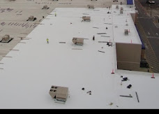
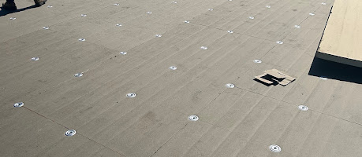
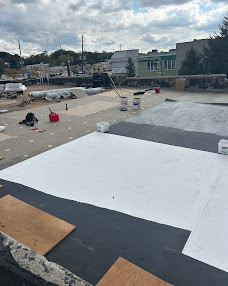
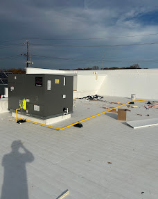

Commercial Roofing in Staten Island
Commercial roof repair, replacement, inspections, and maintenance for property owners and building managers. We assess leaks, seams, flashing, drainage, and the condition of the existing roof before recommending a scope of work.
We work with TPO, EPDM, modified bitumen, torch-down roofing, and coatings on suitable roofs. Tell us about your building, access requirements, and current concerns so we can discuss the next step.
Active commercial leak? Call with the property location and affected areas. Response timing and the work possible depend on weather, safe access, and availability.
Tell us about your roof
Use this short form to prepare an email. Your email app opens next; review the message and send it there.
Prefer to contact us directly? Call (732) 395-3945 or email Maximum Roofing.
Commercial Roof Repair in Staten Island
A leaking commercial roof does not automatically need replacement. Repair may be practical when the defect can be identified, nearby roofing remains serviceable, and moisture or deck damage does not require a wider scope.
Seams, punctures, and worn patches
Inspection should establish the roof material and the condition around the defect. Repair methods and materials need to suit the existing system; placing another patch over deteriorated or wet materials may leave the underlying problem unresolved.
Flashing and rooftop equipment
Leaks near HVAC curbs, pipes, parapets, and roof edges require review of the adjoining details. Share the history of recent equipment work so the inspection can consider changes to penetrations and access routes.
Drainage and repeated leaks
Blocked drainage, persistent standing water, or recurring leaks can indicate more than an isolated opening. The proposed work should address the observed cause and explain when further investigation or larger repairs are needed.
From the first leak report to a defined repair
- Describe the pattern. Tell us which rooms or units are affected, when water appears, and whether the leak follows heavy rain or previous rooftop work.
- Arrange safe inspection access. Identify the roof entrance, building contact, operating hours, and any tenant or equipment restrictions.
- Review the proposed scope. Clarify which roof areas are included, materials and preparation, temporary measures if needed, and how additional damage would be handled.
- Keep the repair record. Retain the agreed scope and available photos with the building’s roof history so later inspections can revisit the affected areas.
If deterioration extends across the roof, compare the repair with restoration options or replacement planning. For an active leak, call (732) 395-3945 to discuss the situation.
Central Avenue, Jersey City: replacing a deteriorated flat roof
A commercial property owner contacted Maximum Roofing about recurring leaks during heavy rain. Our inspection identified deteriorated roofing material and damaged seams, and we recommended replacing the affected roofing system.
Work completed
The crew removed damaged material, prepared the roof surface, and installed a modified-bitumen roofing system, with attention to seams, roof edges, and flashing around penetrations.
Project outcome
The work provided a continuous roofing surface with newly completed seams and flashing details. We reviewed the finished work with the owner and explained ongoing maintenance needs.
This project took place in Jersey City, New Jersey. It illustrates how recurring leaks and deteriorated materials can lead to a replacement recommendation; the scope for your building requires its own assessment.
Read the Central Avenue commercial project storyInformation for property managers and building owners
Before arranging an inspection
Have the property address, on-site contact, approximate roof age and material if known, leak locations, previous repair records, and warranty documents ready. Photos taken safely indoors or from the ground can help explain the concern.
Tell us about controlled roof access, tenant hours, sensitive inventory, rooftop equipment, and any required vendor paperwork.
When reviewing a proposal
Check that the scope identifies the roof sections, preparation and removal, proposed materials, flashing and drainage work, cleanup, exclusions, and any warranty terms. Ask how concealed damage would be documented and priced before additional work.
Compare the actual scope across estimates, including any temporary leak measures and follow-up work.
Scheduling around the building
Discuss deliveries, staging, roof access, noise, odors, and protection of entrances or occupied spaces before agreeing to a schedule. Weather and safe working conditions can affect the sequence and timing.
Confirm who communicates changes to tenants and who can approve decisions on site.
After the work
Keep inspection findings, photos, estimates, invoices, and warranty information together. Record subsequent equipment work and recurring leak locations so future inspections have a useful history.
Plan roof maintenance around the roof’s condition, drainage needs, rooftop traffic, and written warranty requirements.
Commercial roofing work gallery
Photos from our roofing work, showing roof surfaces, installation stages, and details up close.




Commercial Roofing Is a Building-Protection System
A commercial roof protects more than the top of a building. It protects tenants, employees, inventory, equipment, electrical systems, interiors, customer areas, and daily operations. The roof must also manage drains, parapet walls, rooftop units, vents, skylights, piping, foot traffic, snow, wind, ponding water, and repeated maintenance access.
Commercial roofing decisions should be based on the entire assembly: structural deck, vapor and air control, insulation, drainage, cover boards, attachment, membrane or cap sheet, flashing, edge securement, penetrations, and rooftop equipment.
Maximum Roofing inspects the roof and explains whether localized repair, restoration, recover, maintenance, or full replacement may be the most practical next step. We focus on clear observations and project-specific recommendations rather than treating every roof problem the same way.
Commercial Roofing at a Glance
| Category | Information |
|---|---|
| Primary roof types | TPO, EPDM, modified bitumen, torch down, silicone coatings, and related low-slope assemblies |
| Common services | Leak repair, flashing repair, drain repair, inspections, maintenance, restoration, recover, and replacement |
| Buildings served | Warehouses, apartment buildings, retail, offices, restaurants, industrial properties, schools, churches, and mixed-use buildings |
| Common leak sources | Seams, laps, flashing, drains, penetrations, curbs, edges, punctures, old patches, and rooftop work |
| Inspection timing | Commonly once or twice per year, after major storms, and after significant rooftop work |
| Planning options | Repair, restore, recover, partial replacement, or full replacement depending on conditions |
| Service areas | Staten Island, Manhattan, Brooklyn, Queens, the Bronx, and Westchester County |
Complete Commercial Roofing Guide
- Documented Projects
- Commercial Roof Repair
- Property Manager Planning
- Commercial Roofing Services
- Roofing Systems
- Buildings We Serve
- Inspection Process
- Leak Detection
- Preventive Maintenance
- Roof Asset Management
- Roof Restoration
- Roof Replacement
- Emergency Roofing
- Drainage and Ponding Water
- Warranty Guide
- Commercial Roofing Cost Factors
- Commercial Roofing Checklist
- Frequently Asked Questions
- Service Areas
Commercial Roofing Services
Commercial Roof Repair
Leak repair, puncture repair, seam and lap repair, flashing correction, drain work, edge-metal repair, and storm-damage response.
Commercial Roof Replacement
Full and partial replacement when existing materials, insulation, drainage, or decking are no longer reliable.
Commercial Roof Inspections
Review of membrane, seams, laps, flashing, drains, penetrations, edges, rooftop equipment, moisture concerns, and interior leak history.
Preventive Maintenance
Scheduled inspections, debris removal, drain cleaning, documentation, minor repairs, and condition tracking.
Roof Restoration
Targeted repairs and compatible coating systems for qualified roofs that do not require full replacement.
Emergency Leak Response
Rapid inspection, temporary stabilization where appropriate, leak-source evaluation, and permanent repair planning.
Commercial Roofing Systems We Work With
TPO Roofing
A reinforced thermoplastic single-ply membrane with heat-welded seams and reflective color options.
EPDM Roofing
A flexible synthetic rubber membrane installed with approved adhesives, tapes, fasteners, or ballast.
Torch Down Roofing
A modified bitumen system installed with controlled heat over an approved base or substrate.
Modified Bitumen
Asphalt-based reinforced membranes available in torch-applied, self-adhered, hot-asphalt, and cold-applied systems.
Silicone Roof Coatings
Fluid-applied restoration for qualified existing roofs after repairs, cleaning, preparation, and detail work.
Hybrid and Existing Assemblies
Many buildings contain several generations of roofing materials, repairs, coatings, and flashing details that require careful compatibility review.
Commercial Buildings We Serve
Warehouses
Large roof areas, multiple drains, loading operations, roof traffic, and rooftop equipment require organized maintenance and repair planning.
Apartment Buildings
Parapets, stair bulkheads, drains, skylights, tenant leak reports, and shared rooftop spaces require detailed evaluation.
Retail Properties
Roofing work should protect tenants, inventory, customer areas, signs, HVAC systems, and normal business operations.
Restaurants
Exhaust fans, grease exposure, rooftop units, vents, and frequent service traffic can create unique roof conditions.
Office Buildings
We inspect and repair roofs over offices, professional suites, mixed-use properties, and administrative facilities.
Industrial Buildings
Industrial roofs may involve large spans, specialized equipment, penetrations, chemicals, heat, and operational limitations.
Schools and Churches
Institutional facilities benefit from planned inspections, safe staging, documentation, and long-term capital planning.
Medical and Community Facilities
Sensitive interiors and continuous operations make leak prevention, communication, and controlled project planning especially important.
Commercial Roof Inspection Process
Building and Leak History
We review reported leaks, interior damage, previous repairs, roof age, known system type, and recent rooftop work.
Roof Access and Safety
Access routes, ladders, hatches, edges, equipment, electrical hazards, and occupied-building conditions are considered.
Field Membrane Review
The open roof area is checked for punctures, splits, wrinkles, blisters, granule loss, coating failure, seam problems, and surface wear.
Flashing and Penetrations
Walls, curbs, pipes, skylights, hatches, vents, drains, scuppers, and roof edges receive detailed attention.
Drainage Review
Drains, gutters, scuppers, overflow routes, low areas, ponding, and debris conditions are documented.
Moisture and Substrate Concerns
Soft areas, wet insulation indicators, deck deterioration, corrosion, and interior moisture patterns are evaluated.
Recommendations
Findings are organized into immediate repairs, maintenance needs, monitoring items, restoration opportunities, and replacement planning.
Commercial Roof Leak Detection
The location of an interior drip does not always identify the rooftop entry point. Water can move through insulation, deck flutes, concrete, wall cavities, ceiling systems, and mechanical penetrations before it becomes visible inside.
Leak investigation may include interior observations, rooftop inspection, review of seams and laps, flashing examination, drain and scupper review, evaluation of previous patches, moisture testing, and controlled testing where appropriate.
Important: Repeatedly coating the visible interior drip area does not correct a rooftop leak. The roof entry point and the path of moisture must be evaluated.
Commercial Roof Maintenance Programs
Scheduled Inspections
Regular roof reviews help identify small punctures, open seams, loose flashing, blocked drains, and maintenance damage.
Drain and Debris Service
Leaves, packaging, branches, gravel, and rooftop waste can block drainage and increase roof stress.
Minor Repairs
Compatible localized repairs can address small defects before they become widespread leaks or saturated insulation.
Rooftop Work Review
Areas used by HVAC, electrical, plumbing, sign, solar, and communication contractors should be inspected after work.
Condition Documentation
Photos, repair records, roof plans, leak history, and inspection notes support budgeting and warranty compliance.
Capital Planning
Maintenance data helps owners schedule restoration or replacement before repeated emergencies force rushed decisions.
Commercial Roof Asset Management
Roof asset management organizes information about roof areas, system types, installation dates, warranties, repairs, leaks, drainage, rooftop equipment, inspection findings, and projected replacement needs.
For buildings with multiple roof sections, each area may have a different system, age, condition, drainage pattern, and replacement priority. A roof plan and condition history help owners avoid treating the entire property as one uniform surface.
- Maintain roof plans and section names
- Record installation dates and known system types
- Store warranty and manufacturer documents
- Track repairs and recurring leak locations
- Document drains, scuppers, curbs, and penetrations
- Budget for short-, medium-, and long-term needs
Commercial Roof Restoration
Restoration may be considered when the existing roof is compatible, structurally suitable, reasonably dry, repairable, and capable of supporting a restoration system.
Localized Repairs
Leaks, splits, punctures, seams, laps, flashing, drains, and edge details are corrected before coating or restoration work.
Surface Preparation
The roof is cleaned and prepared so primers, sealants, fabrics, and coatings can bond to a suitable surface.
Fluid-Applied Coating
Compatible silicone or another approved coating may be installed at the required application rate over qualified roof areas.
Restoration is not automatic: A coating should not be used to conceal widespread wet insulation, unstable materials, serious deck damage, or an unsuitable existing roof.
Commercial Roof Replacement
Replacement may be appropriate when the existing roof has widespread deterioration, repeated leaks, saturated insulation, failed flashing, poor attachment, severe storm damage, deck problems, or an assembly that no longer supports practical repair.
| Replacement Stage | Typical Work |
|---|---|
| Planning | System selection, access, staging, safety, scheduling, occupied-building coordination, drainage, insulation, and warranty goals |
| Removal | Existing membrane, insulation, wet materials, flashings, and unsuitable components are removed as required |
| Deck work | Damaged decking, corrosion, loose areas, and structural concerns are repaired or referred for appropriate evaluation |
| New assembly | Air or vapor control, insulation, tapered insulation, cover board, membrane, flashing, drains, edges, and penetrations are installed |
| Closeout | Final inspection, punch-list work, documentation, warranty processing, and maintenance guidance |
Emergency Commercial Roof Leak Service
Immediate Priorities
- Protect people from electrical and slip hazards
- Move vulnerable inventory and equipment when safe
- Control interior water where possible
- Document visible conditions and active leakage
- Avoid unsafe roof access during severe weather
Roofing Response
- Inspect the roof when conditions permit
- Identify likely entry points and damaged areas
- Provide temporary stabilization where appropriate
- Develop a permanent repair recommendation
- Document storm, impact, seam, flashing, or drainage damage
Commercial Roof Drainage and Ponding Water
Low-slope roofs depend on drains, scuppers, gutters, downspouts, overflows, crickets, saddles, tapered insulation, and clear flow paths. Blocked or poorly located drainage can leave water on the roof and place additional stress on membranes, seams, flashings, insulation, and decks.
Ponding water should be evaluated in relation to roof slope, drain capacity, structural conditions, insulation, membrane type, and the cause of the low area. Cleaning a drain may solve one condition, while another may require tapered insulation, drain work, deck correction, or system redesign.
Commercial Roofing Warranty Guide
Manufacturer Material Warranty
A material warranty generally addresses qualifying defects in covered products under the manufacturer’s written terms.
Manufacturer System Warranty
Some qualifying projects may receive broader system coverage requiring approved materials, details, installer credentials, inspections, fees, and maintenance.
Contractor Workmanship Warranty
A workmanship warranty addresses the contractor’s installation work under the written agreement and is separate from manufacturer coverage.
Common Warranty Responsibilities
- Register the roof or complete acceptance requirements
- Follow maintenance and inspection requirements
- Report leaks and damage promptly
- Use approved repair materials and methods
- Document rooftop work and alterations
- Protect the roof from abuse and unauthorized changes
Important: Actual warranty coverage is controlled by the signed proposal and warranty documents—not by a general number stated on a webpage.
What Affects Commercial Roofing Cost?
Roof Size and Access
Large roof areas, difficult access, occupied buildings, cranes, lifts, staging, and material handling affect labor and logistics.
Existing Conditions
Wet insulation, deck damage, old layers, coatings, ballast, previous repairs, and hidden deterioration can change the scope.
Roofing System
TPO, EPDM, modified bitumen, coatings, insulation, cover boards, and attachment methods have different material and labor requirements.
Drainage and Insulation
Tapered insulation, drain replacement, overflow work, crickets, and energy-code requirements affect project design.
Flashing and Equipment
Parapets, curbs, skylights, pipes, hatches, HVAC units, ducts, and edge metal increase detailing.
Warranty Goals
Manufacturer-approved assemblies, inspections, installer requirements, and specified components can affect project cost.
Commercial roofing decision checklist
- Identify the site contact and who can approve the scope of work.
- Confirm access, tenant hours, staging, and any vendor requirements.
- Compare estimates for the same roof areas, preparation, materials, and exclusions.
- Agree how additional findings and weather-related schedule changes are communicated.
- Keep repair records and confirm the maintenance obligations in any written warranty.
Commercial Roofing Frequently Asked Questions
What commercial roofing services do you provide?
Maximum Roofing provides commercial roof repair, replacement, installation, inspections, preventive maintenance, emergency leak response, TPO, EPDM, modified bitumen, torch down roofing, and silicone roof coating services.
What is the best commercial roofing system?
The best system depends on the building, roof deck, slope, drainage, existing roof, interior use, budget, energy goals, maintenance plan, and warranty requirements.
Can a commercial roof be repaired instead of replaced?
Sometimes. Localized damage may be repairable when the surrounding system remains serviceable. Widespread moisture, deterioration, or deck damage may make replacement more appropriate.
Can a commercial roof be restored?
Some roofs can be restored after inspection, moisture evaluation, compatible repairs, cleaning, preparation, and confirmation that the existing system is suitable.
What causes commercial roof leaks?
Common causes include open seams or laps, failed flashing, punctures, blocked drains, damaged curbs, edge-metal problems, ponding water, storm damage, and rooftop work.
How often should a commercial roof be inspected?
Commercial roofs are commonly inspected once or twice per year, after major storms, and after significant rooftop work. Actual needs depend on roof condition, age, use, warranty requirements, and exposure.
What is ponding water?
Ponding water is standing water that remains on a roof after rainfall. The cause may involve blocked drainage, low areas, insulation settlement, deck conditions, or inadequate slope.
Can you work while my business remains open?
Many projects can be completed while operations continue, depending on safety, noise, odors, access, interior sensitivity, staging, and the scope of work.
Do you repair warehouse roofs?
Yes. Maximum Roofing provides warehouse roof inspections, repairs, maintenance, restoration planning, and replacement services.
Do you work on apartment-building roofs?
Yes. We work on multifamily roofs with parapets, bulkheads, drains, skylights, vents, rooftop equipment, and shared roof areas.
Do you repair restaurant roofs?
Yes. Restaurant roofs often require close review around exhaust fans, grease-affected areas, HVAC units, vents, pipes, and service-traffic routes.
Do you install TPO roofing?
Yes. TPO is a reinforced thermoplastic single-ply membrane with heat-welded seams and reflective color options.
Do you install EPDM roofing?
Yes. EPDM is a flexible synthetic rubber membrane used on many commercial and low-slope roofs.
Do you install torch down roofing?
Yes. Torch down is a modified bitumen system installed with controlled heat over an approved base or substrate.
Do you install silicone roof coatings?
Yes, on qualified roofs. The existing roof must be inspected, repaired, cleaned, prepared, and confirmed suitable for coating.
What is the difference between repair and replacement?
Repair addresses specific defects. Replacement removes and rebuilds larger roof areas or the full assembly when the existing roof is no longer reliable.
Do commercial roofs come with warranties?
Qualifying projects may include manufacturer material or system warranties and a separate contractor workmanship warranty. Coverage and requirements vary.
Can you document storm damage?
We can document visible roof conditions, damage observations, photos, and repair recommendations. Insurance coverage is determined by the policy and carrier.
Do you provide emergency commercial roof repair?
Yes. We provide leak inspection, temporary stabilization where appropriate, documentation, and permanent repair planning.
Do you provide commercial roofing in Staten Island?
Yes. Maximum Roofing serves commercial properties throughout Staten Island and additional areas in New York City and Westchester County.
Commercial Roofing Service Areas
Maximum Roofing provides commercial roofing services for qualifying projects throughout the following areas. Availability depends on project type, scheduling, access, roof condition, and scope.
- Staten Island
- Manhattan
- Brooklyn
- Queens
- The Bronx
- Westchester County
Staten Island Neighborhood Coverage
We serve commercial properties across the North Shore, Mid-Island, East Shore, West Shore, and South Shore, including St. George, Tompkinsville, Stapleton, Rosebank, Port Richmond, West Brighton, Mariners Harbor, New Dorp, Dongan Hills, South Beach, Great Kills, Eltingville, Annadale, Huguenot, Tottenville, Rossville, Woodrow, Bulls Head, New Springville, Westerleigh, and surrounding communities.
Schedule a Commercial Roof Inspection
Tell us the property location, where the problem appears, and any previous roof work. We can discuss availability and the next step for assessing the roof.
You can also prepare an email using the short form above. You will need to send it from your email app.